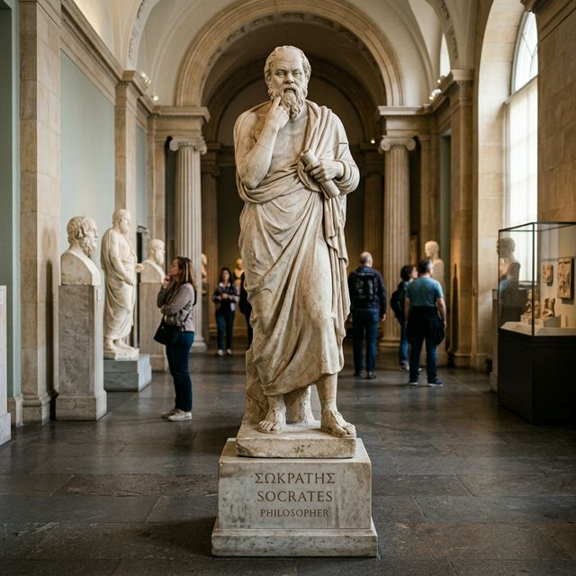
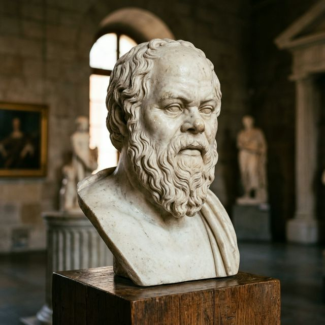
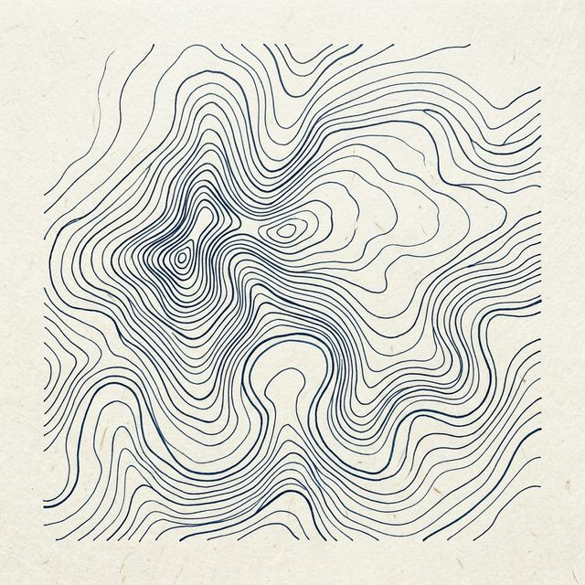

允许生命，按照节奏展开
深入剖析景观社会如何剥夺了我们的原始感知，以及异化如何将具体的人转化为零件。探讨在效率至上的时代，意义是如何流失的。
通过五个为什么，穿透欲望的表象，直达存在的本原。这是一场揭掉生活伪装的逻辑剥离实验。
苏格拉底式的药柜：通过逻辑手术清理认知的脓包，绘制精神地貌图。重新定义那些让你紧绷的概念。
在虚无中重建主权，确认为自己而活的合法性。建立一套不被他人左右的每日生存手册。
【 核心症状观测 】
在正式踏入解构之前，我们必须诚实面对一种普遍的时代痛觉：这不是单纯肉体上的劳累，而是一种“无法再感受到自身存在分量”的深层疲惫。你像是一个精密运转的零件，却唯独不像一个拥有呼吸的人。
这种枯萎感源于一种深刻的异化。现代生活将具体的生命拆解成了各种可量化的社会功能。当你发现自己的大部分生命能量都在扮演这些功能（员工、数字、消费者）时，那个真实的、活生生的主体就会产生萎缩感。
“人只有在不履行任何功能的时候，才最像一个活人。”
哲学疗愈并不关注如何优化你的功能效率，它关注的是那个正在枯萎的、被系统遗忘的内核。我们要做的，是把这个内核重新激活，让你在机械化的世界里，重新找回主体的体温。这种回归不是为了更好的工作，而是为了更好的存在。
居伊·德波提出，我们活在一个由图像构成的“景观世界”中。在这个世界里，真实的直接体验消失了，取而代之的是对体验的“再现”。
你买下某件商品，往往不是因为它的物理实用性，而是因为它能为你提供一种景观身份。在这种循环中，人的真实感受被层层过滤。我们为了被看到而活着，最终彻底丧失了私密的、原初的生命感。我们成为了自己生活的观众，坐在台下观看那场被他人精修过的演出。
回想过去的一天。在你刷手机、开会、吃饭或与人交谈时，有多少个瞬间是你真正“在场”的？
那些闪过脑海的、让你焦虑的念头，是来源于你真实的生命渴求，还是来源于某种社会角色的得失心？
在这里停留三分钟。感受那种剥离了“展示欲”后，那个冷清、孤独、却极其真实的自我。呼吸，确认那个不履职的自己。
MODULE 02
通过五个“为什么”剥离虚假的意义
我们的欲望往往是二手的。社会通过各种隐秘的暗示，将某种生活模板塞进我们的潜意识。如果不进行深度的逻辑剥离，人极有可能在为别人想要的东西奋斗一生，却在深夜感到无边的空虚。
这不仅是一个提问技巧，它是一场精神的手术。每向下问一个“为什么”，你就会剥离掉一层社会赋予你的外壳，直到你触及那个最核心的、可能令你颤栗的本原需求。当你直视底部的真相时，表层的焦虑往往会自动瓦解。
Level 1
为什么你一定要让自己排满日程？
● 因为我害怕虚度光阴。
Level 2
为什么要害怕虚度光阴？
● 因为停下来会让我觉得很罪恶，似乎被抛下了。
Level 3
为什么闲暇会产生罪恶感？
● 因为我觉得只有“高效产出”的人才具备价值。
Level 4
为什么价值必须建立在产出之上？
● 因为我不敢面对那个“无能”的、沉默的自我。
Level 5 / 始基点
如果不被社会评价体系所需要，你还存在吗？你真正恐惧的是无效率，还是那个赤裸的、没有任何标签支撑的存在本身？
通过这五个台阶，我们从“效率焦虑”的假象，直达了“存在焦虑”的现场。对话从此转向真实的自我探索。
挑选一个最近让你感到紧绷、内耗，甚至让你感到焦虑的念头或目标。
1. 为什么？ (记录下第一个直觉答案)
2. 为什么？ (针对第一个答案继续深挖)
3. 为什么？ (不要用大众化的借口搪塞自己)
4. 为什么？ (触及到你的情感底牌与生存恐惧)
5. 为什么？ (剥离所有社会身份后的最终赤裸状态)
不要逃避那个最终的答案。哪怕它看起来很幼稚、很虚无。那就是你此刻最真实的生命锚点。直视它，就是平静的开端。
当你问完五个为什么，你会发现原本那个具体的“目标”、“物品”或“身份”消失了，剩下的是一种纯粹的生命动能。如果你不解决底部的饥渴，你永远无法通过顶部的获得来填补空虚。哲学疗愈带你看见这种认知的错位。
与其追求那个虚假的投影，
不如直面那个真实的缺失。
哲学疗愈的任务，就是帮你从追逐影子的疲惫中解脱出来。因为当你认清了底部的真实需求，你对外部世界的索求就会变得精准、节制且自由。你重新获得了对生命的解释权。
MODULE 03
苏格拉底助产术与逻辑解毒

苏格拉底认为真理藏在每个人心中，只是被层层叠叠的陈见、教条和外界期待所掩盖。对话不是为了教育，而是为了“接生”。
“我没有任何智慧，我只是通过不断的提问，帮助那些有思想的人把他们的孩子生出来。”
通过对话，剥离那些并非属于你的观念，直到你不得不面对那个赤裸的、属于你自己的真实。这种过程伴随着阵痛，但它是重生的唯一路径。剥离，即是获得。
我们的痛苦往往源于对词语的误用。通过助产术，我们重新审视那些让你感到沉重的概念。如果一个词的定义从根源上就是错误的，那么建立在它之上的情感大厦必然崩塌。逻辑的清爽，就是情绪的平息。
揭露你认知中自相矛盾的部分，直到你能够诚实地承认：“我并不知道。”这是通向智慧的门槛。
将一个错误的逻辑推演到极致，直到它暴露出明显的荒谬与生命不可持续性。让错误逻辑自行崩溃。
在逻辑的废墟上，由你亲口说出那个不再让你自相矛盾的、真正的生命信条。这是主体性的确认。
挑选一个最近让你感到“愧疚”或“焦虑”的词。比如“我不够成功”、“我虚度了光阴”。
“这个词是谁定义的？如果现在你是地球上最后一个人，这个词对你还有意义吗？”
“如果你无法给它一个属于你的、基于生命体验的定义，你为什么要被这个他人创造的、抽象的词语统治？”
当这个词在你脑海中开始变得模糊、甚至荒谬时，你便从语言的奴隶制中获得了赦免。深呼吸，感受那种逻辑松绑后的轻盈。
柏拉图认为，大多数人都在洞穴里为影子的舞动而欢呼受苦。哲学疗愈的任务是带你转身，走向那个让你流泪却真实的光源。影子是社会给你的评价指标，而光源是你生命底部的本原需求。转身的一瞬，即是觉醒。
混乱感源于空间的丢失。当你觉得自己陷入了死胡同，往往是因为你还没建立起完整的精神地貌图。你只看到了局部的断裂，而没看到整体的脉络。
通过逻辑制图，我们将你的价值观、恐惧点、责任边界一一标注。当你能在高空俯瞰这一切，原本的深渊可能只是地图上的一个微小注脚。你终于看清了哪些风暴是你制造的，哪些是命运必然的馈赠。看清，本身就是一种平息。

现象学教我们：暂时切断对事物的自然态度。当你遇到一个让你焦虑的对象时，不要急着判断，而是给它打上一对括号。这是一种理性的物理隔绝，让外部评价无法直接触及你的情绪中枢。
[ 外 部 的 评 价 ]
在括号之外，你是那个观察这一切的、不受损伤的纯粹意识。这种心理距离，就是自由真正的起点。你不再是波浪，你是观察波浪的海。
把目前的困难、让你纠结的人或事，放在一个无限大的时间轴上（比如一百年后，甚至一千年后）。
从那个遥远的时点看回来，此刻的你，在担忧什么？在这个广阔的宇宙视域中，你的烦恼是否缩小成了一个微小的注脚？
感受那种俯瞰带来的解脱感。这就是逻辑制图的威力：将“绝境”转化为“路径的选择”。
MODULE 04
在荒谬中夺回生命主权
加缪指出，世界本质上是荒谬的，它对我们的诉求毫无回应。但当西西弗斯意识到推石上山是徒劳的，却依然决定转身走向山坡时，他便击败了诸神。他赋予了这一徒劳动作以尊严。
“我们要想象西西弗斯是快乐的。因为那一刻，这块石头是属于他自己的。”
疗愈并非追求某种圆满的结果，而是在承认荒谬后，夺回那份坚韧的、属于个体的掌控权。这种反抗行为本身，就是治愈。
萨特认为，人是不具备预设本质的。你不是作为某种人出生的，你是通过每一个具体的选择，把自己塑造成了那个人。本质是结果，而非原因。
如果你感到被困住了，那是因为你误以为某些“角色”或“标签”是不可改变的。在存在主义看来，除了物理定律，没有任何东西能剥夺你的选择自由。你这一刻的软弱，不代表你下一刻的必然。
疗愈的终点，是承认这种“令人眩晕的自由”，并为此负起全责。你就是你生命的最高立法者。
把手放在胸口。感受那一下下跳动。它不为任何人，只为你自己跳动。
此刻的你，不是一个简历，不是一个账号，不是一个外部评价。你是一个正在呼吸、正在困惑、正在试图理解世界的奇迹。所有的过去都已湮灭，所有的未来尚未发生。
只有这一刻的存在是无可反驳的真理。在这里停留。确认这个具体的、活生生的自己。这一刻，你就是世界的圆心。
当你改变了描述世界的方式，你就改变了世界本身。将异化的语言转化为主动的、主体的、去中心化的语言。
| 中毒表达 (异化态) | 健康表达 (主体态) |
|---|---|
| ● 我这辈子彻底失败了。由于我没能达成... | ● 我当前的某些社会化尝试未达预期，这正好揭示了我的边界，我依然拥有解释权。 |
| ● 我不得不去应酬那个我厌恶的饭局。 | ● 我权衡了利弊，主动选择承担此代价以换取某种资源，我依然是最高决策者。 |
| ● 他彻底毁了我的人生，我没有未来了。 | ● 他的行为造成了重大破坏，但我依然保留对余生意义的唯一主权，这无法被剥夺。 |
不要用“正常人应该如何”来要求自己。每一个具体的活人都是独特的变量，没有所谓的“标准模型”。接受你的异常，那是你的独特性所在。
每天至少留出15分钟，不做任何有用的事。只是散步、呼吸、确认那个不履职、不被计算的自我。那是你生命的留白，极其珍贵。
当你产生表现欲或某种被植入的物欲时，停下来问自己：这是为了喂养景观，还是为了满足我真实的身体需求？拿回注意力。
困惑是灵魂还在呼吸的证明。不要急着寻找标准答案，学会与“不确定性”优雅共处，那是你生命能量最活跃的源泉。
哲学对话并不承诺快乐，也不承诺成功。在理性的手术后，你可能会感到更加孤独，甚至会感到世界变得有些空旷。但这种孤独是清醒的，这种空旷是自由的。
你不再是一个在洞穴里看影子跳舞的囚徒，而是一个在荒原上独自建立家园的开拓者。这就是活人感的回归：一个具体的、清醒的、能够忍受真实并赋予其意义的人。
“疗愈不是回到了温暖的旧梦，而是有力量在寒冷的真实中站立。”
哲学对话的余韵往往发生在对话结束之后。建议在每次深入思考后记录以下三点，将碎片转化为你的存在地基：
● 被拆解的伪命题
今天有哪些原本坚信不疑、令我深感内耗的观念崩塌了？它们背后的社会逻辑是什么？
● 触碰到的始基感
在剥离所有社会角色后，我感受到了什么？那种最原初的生命脉动是什么样子的？
● 确认为主的行动
明天我将采取哪一个不为“功能”而为“主体”的微小行动？它将如何确认我的存在？
允许自己慢下来。哲学疗愈不是一次性的修理，而是一场长期的、温和的生长。你不再急于到达终点，因为你已经看清，终点只是一个概念，唯有过程是鲜活的存在。允许生命按照自己的节奏，慢慢展开。这种慢，是对效率暴政最彻底的反抗。
慢下来，是为了听清生命底部的回声。
我不寻求治愈生活，
我寻求在生活中觉醒。
“一场深度的对话，不是为了达成某种共识，而是为了确认彼此都是活着的、具备无限可能性的奇迹。”
Allow life to bloom in its own season.